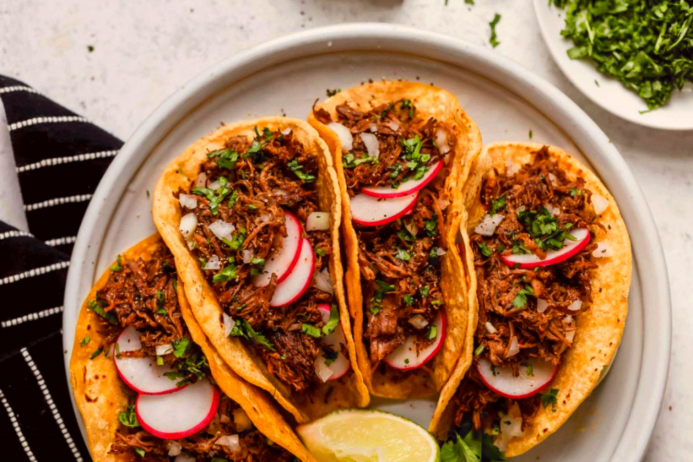

Taco recipes for Barbacoa, Al Pastor, Tinga, etc... etc...

What are Tacos???
Tacos are the bloodline of all people, wether or not they're from the homeland of Mexico.
These savory dishes are easy to make!
You will need the following items:
- Tortillas. Most prefer flour but authentic tortillas are made from corn. Use which ever you prefer!
- Spices such as cilantro, little bit of salt, and minces of onions helps with adding punch to the flavor.
- The Meat!!!! You can various types proteins like Barbacoa, Chicken, Steak, even fish for your tacos! Go wild!!!!
Steps to cooking!
- Cook the meat with the spices
- Heat up the tortillas on a stove and add a little bit of salt for extra flavor
- Put them together and voila! Tasty Tacos!
Here's a link to a popular Birria recipe! Birria Tacos